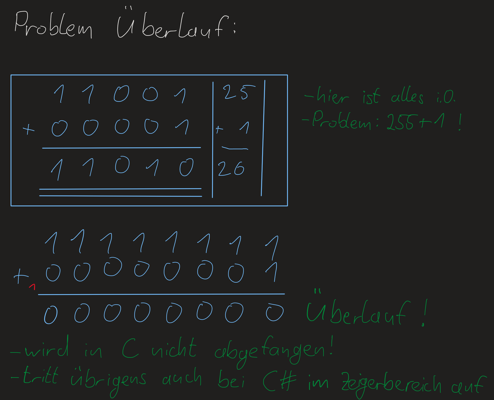
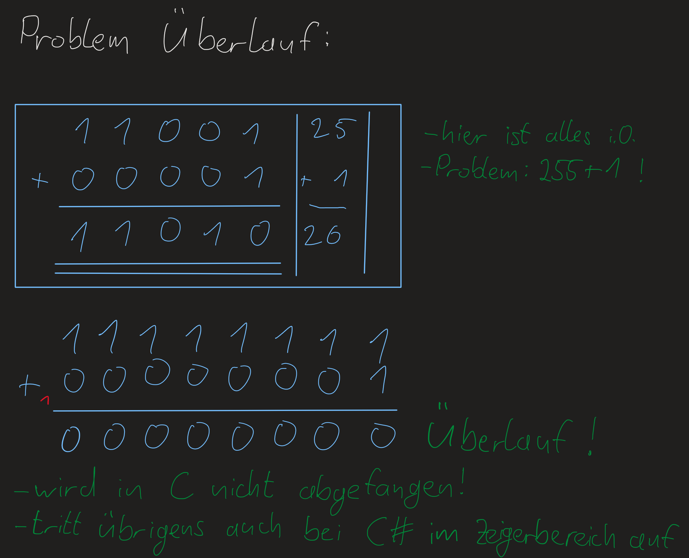

Vorlesung1 Montag 4. Oktober 2021¶
Intro:¶
Klausur:
2 Teile, ein praktischer und ein theoretischer.
Man kann sich einen Teil raussuchen.
Jeder kann mit einer 1 aus der Klausur gehen.
Mit Zettel und Stift!
Vorlesung:
Gruppenarbeit in jeder Vorlesung.
Wichtige Kommandos im Terminal:¶
- dir (aktuelles Verzeichnis anzeigen)
- ls -a (alles im Verzeichnis)
- ls -l (mehr Infos)
- ls -la (kurze Schreibweise, Reihenfolge von Parametern kann wichtig sein)
- mkdir (Verzeichnis erstellen)
- cd (Verzeichnis wechseln)
- pwd (zeigt aktuelles Verzeichnis an)
- touch (Datei anlegen)
- > (Datei anlegen: > test.txt)
- . aktuelles Verzeichnis
- .. vorheriges Verzeichnis (Baumstruktur)
- rm (Verzeichnis löschen, -r (rekursiv))
- Zwei Arten von Links (ln datei.txt hardlink.txt, ln -s datei2.txt softlink.txt, Hardlink wird als normale Datei angezeigt, Softlink wird als Link auf die Datei angezeigt)
- cat (Dateiinhalt anzeigen)
Erläuterung ls -la:¶
drwxrwxr-x -rw-rw-r–
1 Zeichen d=link, -=Datei
3 Zeichen read, write, execute für aktuellen Nutzer
3 Zeichen für die Gruppe
3 Zeichen für alle anderen
Erläuterung ln:¶
Hardlink ertellt einen Verweis auf den Inhalt der Originaldatei (Änderungen in beiden ist in jeweils andern vorhanden, ändern ihre Größe, funktionieren nur in der gleichen Partition, bei Löschen )
Softlink erstellt einen Verweis auf die eigentliche Datei (funktionieren immer, auch Partitionsübergreifen, bei Löschen des Softlinks geht auch die Originaldatei kaputt)
VIM Editor:¶
- vim datei.txt (Erstellt neue Datei und öffnet sie in vim)
Kommandomodus:
- mit ESC in den Kommandomodus wechseln
- :w zum Speichern
- yy Zeile kopieren
- p Zeile unterhalb des Cursors einfügen
- y3y 3 Zeilen kopieren
- P fügt oben ein
- /TextZumSuchen Text suchen
- o neue Zeile unten und Cursor setzen
- O neue Zeile oben
- u Rückgängig
- a einzeichen weiter und Editiermodus
- A Ende und Editiermodus
- mit i in den Einfügemodus wechseln
- mit I Zeilenanfang und Editiermodus
- :s/Zeile/Linie/g Ersetzen von Zeichen, wobei g ein regulärer Ausdruck ist
Grundlagen C:¶
- In der Vorlesung verwenden wir ANSI C
- Stammt aus den 70ern
- Siehe auch Kommentare im Programmcode
- // Kommentar IST IN ANSI C NICHT GÜLTIG, nur /**/ sind zugelassen
- Es gibt Funktionen ohne Rückgabewert aber sind nicht konform
- cc -ansi -o 01_erstesc.bin 01erstexc.c zum kompilieren
- mit ./01_erstesc.bin Programm ausführen
- Bsp. eines Hello World Programmes:
/*Unser erstes C Programm und dies ist der erste Kommentar*/
#include<stdio.h> /*Header C-LIB*/
int main(void) /*Funktion, Einstiegspunkt, leerer Parameter*/
{ /*Codestyle*/
printf("Hallo ihr lieben Studenten\n");
return 0; /*Verlässt die Funktion*/
}
/*Programm beendet*/
- Es gibt eigentlich nur while-Schleifen, For-Schleife wird vom Compiler zu while-Schleife mit goto gemacht (siehe dazu 03schleifen.c und 04dowhile.c)
- Bsp. Schleife:
#include<stdio.h>
int main(void)
{
/*Am besten hier oben Variablen deklarieren.
Der Compiler schiebt die sowieso hoch,
weil bei Eintritt in die Funktion,
die Speicherbereiche klar sein müssen.
*/
int i;
/*Geht nicht in ANSI C
for(int i=0; i<10, i++)
{...}
*/
for(i=0; i<10, i++)
{
/*%d ist Platzhalter für eine dezimale Zahl*/
printf("i ist %d und i*i ist %d\n",i,(i*i));
}
return 0;
}
- Beispiele für Schleifen in C
- While-Schleife:
{kind=link}

- While-Schleife als Enlosschleife mit Abbruchbedingung:
{kind=link}
- While Schleife mit continue:

- in C wird der Überlauf nicht abgefangen:
 

{kind=link}
- Codebeispiel für den Überlauf:
#inlude<stdio.h>
int main(void)
{
/*unsigned als Schlüsselwort für Datentypen ohne Vorzeichen*/
unsigned short s1 = 65535;
unsigned short s2;
s2 = s1 + 1;
printf("s1 ist %d\n",s1);
printf("s2 ist %d\n",s2);
return 0;
}
- Reihenfolgen der includes sind bei einigen Bibliotheken nicht egal
- gdb für das Debugging
- Rekursion ist in C implementiert
- Bsp. Umwandeln einer Dezimalzahl in eine Binärzahl mittels Rekursion:
/*555 -> 1000101011*/
#include<stdio.h>
void getBinary(int a)
{
if(a>0)
{
getBinary(a/2);
printf("%d",a%2);
}
}
int main(void)
{
int i = 255;
getBinary(i);
printf("\n");
return 0;
}
- Dazu ein Diagramm mit den Funktionsaufrufen:
{kind=link}
- Zeichenketten mit #include<string.h>
- Strings werden als char Array (bzw. Vector) deklariert
- Bei Iteration eines 10 Zeichen langen char Arrays mit einem Index >=10, wird auf den Speicher nach dem Array zugegriffen! (siehe 11_vectors.c)
- Im gdb x32c s1 Speicher auslesen, man erhält ASCII Zeichen
- ASCII Tabelle mit „man ascii“ anzeigen lassen
- \000 (null character) am Ende eines string
- Man kann also nach diesem Zeichen prüfen, um mit strings zu arbeiten (printf Funktion macht das, um die Ausgabe auf der Konsole abzubrechen)
GDB Debugger¶
Wichtige Befehle¶
| run | Starten |
| list | Code anzeigen |
| list 15 | Code an Zeile 15 anzeigen |
| break 3 | Breakpoint an Zeile 3 setzen |
| backtrace | Fuktionsaufruf Hierarchie anzeigen |
| print n | Inhalt der Variablen n ausgeben |
| info locals | Inhalt aller lokaler Variablen ausgeben |
| next | Nächsten Befehl ausführen |
| continue | Programmablauf um nächsten Breakpoint fortsetzen |
| clear | Breakpoint löschen |
| step | Gehe in die nächste Funktion (z.B. auch printf()) |
| quit | Dubugging beenden |
| x\32c s1 | Speicher von Variabler (Vector) s1 auslesen |